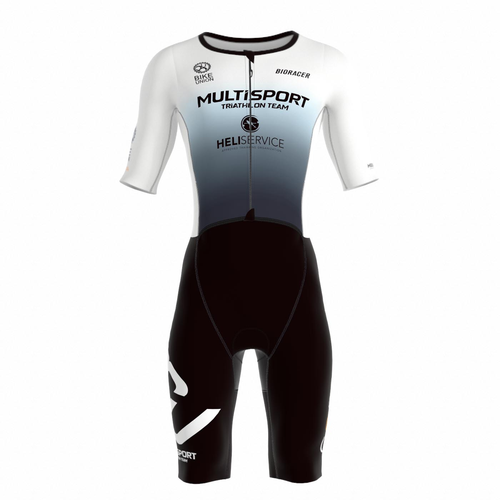

SWIM.BIKE.RUN.
Tréning, tím a výkonnostná diagnostika. Na jednom mieste. Pre ľudí, ktorí berú vytrvalostný šport vážne.

Jeden tím.
Rôzne ciele.

Nie univerzálny plán. Tvoj plán.
Individuálny tréningový proces pre triatlon a vytrvalostné disciplíny. Ciele, dostupný čas, aktuálna forma a spätná väzba určujú ďalší krok.
Meraj.
Rozumej.
Trénuj.
Výkonnostná diagnostika nie je zbierka čísel. Je to podklad na lepšie rozhodnutia o tréningu. Vyber si typ merania a over si s trénerom vhodný protokol.
01VO₂ Master+
Na čo slúžiMeranie respiračných parametrov pri záťaži, vrátane spotreby kyslíka. Vhodné pri nastavovaní intenzít podľa konkrétneho testovacieho protokolu.
Priebeh a prípravaZáťažový test s maskou a analyzátorom. Priniesť športové oblečenie, obuv a pitie. Dĺžku, podmienky a obmedzenia potvrdí tréner pred rezerváciou.
Výstup / cenaVýsledky merania a interpretácia podľa dohodnutého protokolu. Cena a termín na vyžiadanie.
Dopyt na test ↗
02Laktátový test+
Na čo slúžiLaktátová krivka a odhad tréningových intenzít v závislosti od protokolu. Pre športovcov, ktorí chcú lepšie riadiť intenzitu.
Priebeh a prípravaStupňovaná záťaž s malými odbermi krvi. Priniesť tréningové oblečenie a pitie; presné pokyny dostaneš pred testom.
Výstup / cenaNamerené hodnoty, graf a interpretácia podľa protokolu. Cena a trvanie na vyžiadanie.
Dopyt na test ↗
03Moxy / SmO₂+
Na čo slúžiSledovanie lokálnej svalovej oxygenácie počas záťaže. Doplnkový pohľad na reakciu svalov pri tréningu alebo teste.
Priebeh a prípravaSenzor sa umiestňuje na vybraný sval počas záťaže. Oblečenie musí umožniť prístup k miestu merania.
Výstup / cenaPriebeh SmO₂ a odborné vysvetlenie v kontexte testu. Cena, trvanie a dostupnosť na vyžiadanie.
Dopyt na test ↗
04hDrop / Hydratácia+
Na čo slúžiOdhad parametrov potenia a elektrolytových strát v podmienkach merania. Pomáha pri plánovaní hydratácie.
Priebeh a prípravaMeranie počas aktivity podľa použitého postupu. Priniesť športové oblečenie; prípravu a požadovanú záťaž upresní tréner.
Výstup / cenaVýsledky merania s interpretáciou a praktickými odporúčaniami v rozsahu služby. Cena na vyžiadanie.
Dopyt na test ↗
Presné balíky, protokoly, časy, ceny a rozsah reportov ešte čakajú na potvrdenie trénerom. Merania nenahrádzajú lekárske vyšetrenie.
Viac než tréningový plán.
Multisport Triathlon Team spája individuálne tréningové vedenie so spoločnými tréningami a klubovým prostredím. Za tímom stojí tréner Michal Uličný.
Sleduj tím na Instagrame ↗